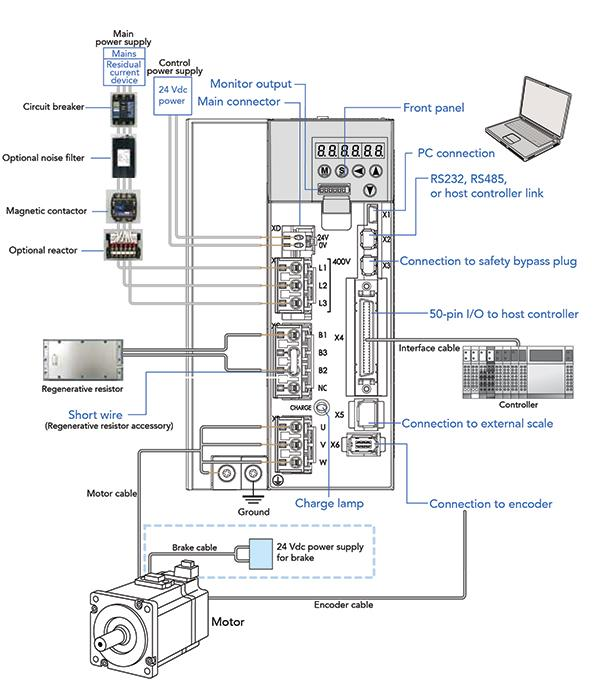

02_Servo_Drive - Servo drive
A servo drive is the control and power-conversion unit that makes a servo motor follow a commanded position, speed, or torque. The motor provides the mechanical motion; the drive regulates it using feedback, control algorithms, and power electronics.
The essential difference between an ordinary motor starter and a servo system is that a servo system is designed for controlled, feedback-based motion, not merely switching a motor ON and OFF.
1. Servo system architecture

A typical industrial servo axis contains a controller, servo drive, servo motor, feedback sensor, and mechanical load.
Motion controller / PLC
|
| Position, speed or torque command
v
Servo drive
|
| Controlled motor power
v
Servo motor
|
v
Gearbox / coupling / ball screw / mechanism
|
v
Machine load
Servo motor encoder
|
| Position and speed feedback
v
Servo drive
|
+---- Feedback used to regulate motion
The feedback path may connect directly to the drive, while the motion controller exchanges commands and status over a fieldbus or dedicated interface.
Main components
| Component | Function |
|---|---|
| Motion controller | Generates motion commands and sequences axes |
| Servo drive | Controls motor current, torque, speed and position according to its architecture |
| Servo motor | Converts electrical energy into controlled mechanical motion |
| Encoder or feedback sensor | Measures position and supports speed estimation |
| Mechanical transmission | Transfers motor motion to the machine |
| Power supply and DC bus | Supplies and distributes energy within the drive |
| Regenerative braking circuit | Manages energy returned during deceleration, when provided |
| Safety functions | Provide supported functions such as Safe Torque Off (STO), depending on the drive |
A PLC may act as the motion controller if it supports the required motion functions. An ordinary PLC output alone does not automatically provide high-performance servo positioning.
2. What does a servo drive actually control?
Servo drives commonly regulate three related variables: current or torque, speed, and position.
2.1 Torque control
The drive regulates motor current to produce the requested torque. In many permanent-magnet servo motors, torque is approximately proportional to torque-producing current over the intended operating range.
Applications include controlled force, tension regulation, and torque-limited tightening, depending on the machine and drive capabilities.
2.2 Speed control
The drive regulates motor speed to follow a speed reference.
For example, a conveyor or rotating machine may require a controlled speed ramp rather than simply running at the motor's uncontrolled operating speed.
2.3 Position control
The drive or motion controller regulates position so that the axis reaches a commanded target.
Applications include:
- Robot joints.
- Indexing tables.
- Pick-and-place mechanisms.
- Packaging axes.
- Electronic camming and synchronization.
- Precision positioning of machine tooling.
The control mode and the location of the position loop depend on the drive and controller architecture.
3. The three servo control loops
A common servo architecture uses nested feedback loops.
Position command
|
v
Position loop
|
| Speed reference
v
Speed loop
|
| Torque / current reference
v
Current loop
|
v
Power electronics
|
v
Servo motor
|
v
Position / speed feedback
The diagram is conceptual. Actual drive architectures vary, and some loops may be implemented in the motion controller rather than entirely inside the drive.
Current loop
The current loop is typically the fastest loop. It regulates motor current and therefore controls torque-producing current.
Speed loop
The speed loop compares requested speed with measured or estimated speed and adjusts the torque request.
Position loop
The position loop compares commanded position with feedback position and generates a correction, often expressed as a speed command.
The loops must be tuned and configured correctly. Poor tuning can cause oscillation, excessive noise, vibration, overshoot, or unstable movement.
4. Servo drive power electronics
Most industrial AC servo systems use a drive that converts incoming electrical power into a controlled output for the motor.
A common arrangement is:
AC supply
|
v
Rectifier
|
v
DC bus / DC link
|
v
Inverter (power semiconductor switches)
|
v
Servo motor
Rectifier
Converts incoming AC into DC. The exact input arrangement depends on the drive model and supply.
DC bus
Stores and distributes energy through DC-link capacitors and associated components. The DC bus can also receive energy returned by the motor during deceleration.
Inverter
Uses power semiconductor devices, commonly IGBTs or MOSFETs depending on the design, to generate controlled motor output.
The drive controls switching to regulate motor current and produce the required torque and motion.
Regenerative energy
When a servo motor decelerates a moving load, it can act as a generator. The energy may return to the DC bus.
Depending on the drive, this energy may be:
- Dissipated through a braking resistor and braking circuit.
- Shared with other axes through a common DC bus.
- Returned to the electrical supply by a regenerative drive.
- Managed through another manufacturer-specific arrangement.
If the DC bus voltage rises beyond permitted limits during deceleration, the drive may report an overvoltage fault. A braking resistor is not a universal cure: its compatibility, resistance, power rating, duty cycle, and wiring must match the drive specifications.
5. Servo drive versus VFD
Both devices control motor motion, but their typical applications and feedback capabilities differ.
| Characteristic | General-purpose VFD | Servo drive |
|---|---|---|
| Typical motor | Induction motor or supported synchronous motor | Servo motor designed for the drive |
| Primary applications | Pumps, fans, conveyors and general speed control | Precision positioning, rapid acceleration and coordinated motion |
| Feedback | May be open-loop or closed-loop | Typically designed around feedback-based motion |
| Positioning | Possible with supported features and suitable feedback | A core capability in positioning applications |
| Dynamic response | Depends on control mode and drive | Generally designed for high dynamic performance |
| Tuning | Motor and application parameters | Motor, feedback, control loops and mechanical load |
| Integration | Digital I/O, analog references, industrial networks | Motion networks, position commands, digital I/O and supported feedback interfaces |
These are typical distinctions, not absolute limits. Advanced VFDs can perform positioning and closed-loop control, while servo performance depends on the specific motor, drive, controller, and application.
6. Command interfaces and communication
A servo drive must receive motion commands and return status information.
Common command methods include:
- Pulse train and direction signals.
- Analog speed or torque references.
- Digital I/O for enable, reset, mode selection, and other functions.
- Industrial communication networks with supported motion profiles.
- Real-time motion networks used for synchronized axes.
Examples of industrial ecosystems include Rockwell motion control, Siemens SINAMICS systems, Mitsubishi servo systems, and other vendor-specific platforms.
The precise command interface, feedback protocol, and supported motion functions must be compatible across the controller, drive, motor, and engineering software.
Typical signals
| Signal or data | Purpose |
|---|---|
| Servo enable | Permits operation when all required conditions are met |
| Servo ready | Indicates the drive is ready according to its status definition |
| Servo alarm | Indicates a drive fault or alarm condition |
| Reset | Requests a supported fault-reset operation |
| Position command | Specifies the target position or motion trajectory |
| Speed command | Specifies requested speed |
| Actual position | Reports feedback position |
| Actual speed | Reports measured or estimated speed |
| Torque/current feedback | Reports a torque-related or current-related value |
| In-position | Indicates the axis meets configured position criteria |
| Homing complete | Indicates the homing procedure has completed successfully |
A signal's exact meaning depends on the vendor's documentation. For example, Servo Ready does not necessarily mean the machine is safe to move.
7. Servo motor and encoder compatibility
The servo drive must support the motor's electrical and feedback specifications.
Check:
- Motor model and rated voltage.
- Continuous and peak current.
- Rated and maximum speed.
- Continuous and peak torque.
- Encoder type and feedback protocol.
- Motor and encoder connector pinouts.
- Brake voltage and current, if a motor brake is fitted.
- Cable length and manufacturer restrictions.
- Motor identification or parameter file requirements.
A drive can have the correct power rating yet still be incompatible with a motor because of its feedback interface, firmware, motor identification, or commutation requirements.
Do not assume that encoder wiring is interchangeable between manufacturers. Incorrect wiring can prevent operation or damage equipment.
8. Servo enable, homing and positioning
Servo enable
A servo enable command permits the drive to operate when its required conditions are satisfied. It does not necessarily command movement.
Homing
Homing establishes a machine reference position. Depending on the system, it can use an encoder index, home switch, limit switch, or another supported reference method.
An absolute encoder may retain position information through power loss, but the machine may still require a reference procedure to establish its actual mechanical position, depending on the encoder, configuration, and application.
Position command
A positioning command tells the motion system where to move. The controller and drive execute the trajectory according to configured limits and motion parameters.
Common parameters include:
- Target position.
- Velocity.
- Acceleration and deceleration.
- Jerk or motion-profile shaping, where supported.
- Software travel limits.
- Position tolerance.
- Following-error limits.
Following error
Following error is the difference between commanded position and feedback position, according to the system's definition.
Excessive following error may result from:
- Mechanical obstruction.
- Excessive acceleration.
- Incorrect tuning.
- Incorrect feedback scaling.
- Insufficient available torque.
- Coupling or transmission problems.
- Feedback or communication faults.
The correct response depends on the drive's configuration and the machine's risk assessment.
9. Servo drive commissioning and tuning
Commissioning must follow the drive and motor manufacturer's procedure. Servo axes can accelerate rapidly and develop substantial torque, so an incorrect configuration can cause equipment damage or injury.
Recommended commissioning sequence
- Verify motor, drive, supply, feedback, and cable compatibility.
- Inspect grounding, shielding, connectors, and power wiring.
- Confirm the motor and feedback parameters match the actual hardware.
- Check brake wiring and release conditions, if applicable.
- Configure communication and control mode.
- Verify limit switches, interlocks, and required safety functions.
- Perform the specified motor identification or tuning procedure.
- Establish the reference position using the approved method.
- Test at conservative speed and acceleration within the machine's permitted operating conditions.
- Verify actual direction, position scaling, stopping behavior, and fault response.
- Test the operating sequence and record the final parameters.
Never assume the motor direction or encoder polarity is correct because the axis powered up successfully.
Tuning concepts
Gain: Determines how strongly the control loop reacts to error. Excessive gain can cause instability or vibration; insufficient gain can produce sluggish response and tracking error.
Inertia ratio: Compares the reflected load inertia with motor inertia according to the drive's definition. A high load-to-motor inertia ratio can make tuning more difficult and limit dynamic performance.
Resonance: Mechanical structures, couplings, belts, and gearboxes can create resonant frequencies. Filters and notch functions may help, where supported, but the underlying mechanical problem should also be investigated.
Positioning accuracy: Depends on the feedback resolution, mechanical backlash, compliance, calibration, thermal effects, and control configuration. Encoder resolution alone does not guarantee machine accuracy.
10. Common servo drive faults
| Fault or symptom | Possible causes | Diagnostic direction |
|---|---|---|
| Drive will not enable | Missing permissive, active alarm, enable signal absent, safety function active | Review status bits, alarm history and enable conditions |
| Overcurrent | Short circuit, wiring fault, excessive acceleration, mechanical obstruction | Isolate safely, inspect motor circuit and mechanical load |
| DC bus overvoltage | Rapid deceleration, regenerative energy, supply issues | Review deceleration profile and approved regenerative/braking arrangement |
| DC bus undervoltage | Supply dip, phase loss, supply or power-circuit problem | Check supply conditions and drive diagnostics |
| Motor overheating | Excessive load, poor cooling, unsuitable duty, parameter mismatch | Check load, cooling, motor data and thermal monitoring |
| Following error | Obstruction, excessive acceleration, incorrect scaling, poor tuning | Compare commanded and actual motion; inspect mechanics |
| Encoder fault | Damaged cable, loose connector, incompatible feedback, sensor fault | Inspect feedback connections and diagnostic codes |
| Vibration or oscillation | Poor tuning, mechanical resonance, backlash, loose mounting | Inspect mechanics and review tuning under controlled conditions |
| Position is incorrect | Wrong units, electronic gearing, homing error, scaling mismatch | Verify units, reference procedure and command/feedback scaling |
| Motor moves in the wrong direction | Incorrect configuration, wiring or coordinate definition | Follow the manufacturer's direction-verification procedure |
| Brake-related fault | Brake circuit issue, incorrect sequencing, failed brake | Check brake specification, wiring and control sequence |
| Communication fault | Network interruption, configuration mismatch, timing issue | Check network diagnostics, device configuration and controller status |
Fault codes are vendor-specific. Record the exact code and associated conditions before resetting; the same broad symptom can have several different causes.
11. Safety functions and safe stopping
Servo systems can move with high speed and force. A stop command, drive disable, and safety-rated stop function are not necessarily equivalent.
Safe Torque Off (STO)
STO is a safety function that prevents the drive from producing torque, according to the function's certified design and operating conditions. It does not necessarily isolate the electrical supply, discharge the DC bus immediately, or mechanically hold a vertical load.
For example, a vertical axis may descend if its holding brake and mechanical arrangement are not designed and controlled correctly.
Other safety functions, such as safely limited speed or controlled stopping, are available only on drives that support them and when implemented according to their requirements.
Practical safety rules
- Follow lockout/tagout and verify absence of voltage before electrical work.
- Account for stored energy in the DC bus.
- Observe the specified discharge waiting time and verify the required safe condition.
- Never disconnect motor or feedback cables while energized unless the manufacturer explicitly permits the operation.
- Do not use STO as a substitute for electrical isolation.
- Do not rely on ordinary PLC logic alone for a safety function that requires safety-rated control.
- Verify guarding, interlocks, brakes, travel limits, and emergency-stop behavior as part of the complete machine design.
12. Servo drive selection
A drive should be selected for the actual motion duty, not merely by matching motor kilowatts.
| Selection factor | Why it matters |
|---|---|
| Motor compatibility | Ensures supported electrical and feedback operation |
| Continuous current | Must support the required continuous motor load |
| Peak current | Must support acceleration and transient torque demand within its allowed duration |
| DC supply and voltage | Must match the motor-drive system and installation |
| Speed range | Must cover the required operating speed |
| Regenerative duty | Determines braking and energy-management requirements |
| Motion network | Must be compatible with the controller and required synchronization |
| Feedback interface | Must support the installed encoder or sensor |
| Safety functions | Must satisfy the machine's required safety architecture |
| Environment | Temperature, contamination, vibration and enclosure affect reliability |
| Axis coordination | Multi-axis machines may require synchronized clocks, motion profiles or a common DC bus |
| Engineering software | Must support configuration, diagnostics, firmware and commissioning |
Continuous versus peak torque
A servo motor may provide a peak torque substantially above its continuous rating for a limited period. The duration and permitted duty depend on the motor and drive.
Do not select a system solely from peak torque. Check continuous torque, RMS torque over the duty cycle, speed-dependent limits, current limits, and thermal constraints using the manufacturer's sizing method.
13. Servo drive versus soft starter
The previous topic covered soft starters, which reduce starting stress on motors. A servo drive serves a different purpose.
| Feature | Soft starter | Servo drive |
|---|---|---|
| Primary purpose | Controlled motor starting and often stopping | Controlled torque, speed and position |
| Typical feedback | Usually not a precision motion-feedback system | Commonly uses encoder or other supported feedback |
| Positioning | Not a normal core function | A core capability in positioning systems |
| Typical motor | Often a standard induction motor | A compatible servo motor |
| Application | Pumps, fans and other loads needing controlled starting | Robot joints, indexing, precision motion and synchronized axes |
| Operating role | Mainly manages starting and stopping | Regulates motion throughout operation |
A soft starter is not a low-cost substitute for a servo system when the application requires accurate, repeatable positioning.
14. Interview questions and answers
1. What is a servo drive?
A power-electronic controller that regulates a compatible motor's torque, speed, or position according to commands and feedback.
2. What is the difference between a servo motor and a servo drive?
The motor converts electrical energy into mechanical motion. The drive supplies and regulates the electrical power required to control that motion.
3. Why is encoder feedback used?
It provides position information and supports speed estimation and closed-loop motion control.
4. What are the three common servo control loops?
Current or torque, speed, and position loops. Their exact arrangement depends on the drive and motion controller.
5. Why is the current loop typically the fastest?
It must regulate motor current rapidly so the system can respond to torque commands and disturbances.
6. What is following error?
The difference between commanded position and feedback position, according to the system's configured definition.
7. Why does a servo axis vibrate?
Possible causes include incorrect tuning, mechanical resonance, backlash, loose mounting, or an unsuitable inertia match.
8. Why can a servo drive trip on DC bus overvoltage during deceleration?
The motor may regenerate energy into the DC bus faster than the system can absorb, dissipate, or return it.
9. What is homing?
A procedure that establishes the axis's machine reference position.
10. Does an absolute encoder eliminate the need for homing?
Not always. The requirement depends on encoder type, retained position validity, machine configuration, and the method used to establish the mechanical reference.
11. What is STO?
Safe Torque Off is a safety function that prevents the drive from producing torque when correctly implemented. It does not automatically provide electrical isolation or mechanical holding.
12. What happens if the encoder feedback fails?
The drive may report a feedback fault and inhibit or stop motion according to its design. The exact response depends on the fault and configured system.
13. Why does a servo drive require tuning?
Tuning establishes suitable control-loop response for the motor, load inertia, mechanical structure, and required dynamic performance.
14. Can a servo drive operate any servo motor?
No. Motor electrical characteristics, feedback interface, commutation requirements, connectors, and supported configuration must be compatible.
15. Why might a servo axis reach the correct position slowly?
Possible causes include conservative acceleration limits, torque limits, inadequate sizing, load inertia, incorrect motion parameters, or mechanical friction.
15. Practical exercises
Exercise 1: Servo axis does not enable
A positioning axis displays Servo Ready = FALSE, and the motor does not move.
Investigate:
- Active drive alarms.
- Enable and permissive conditions.
- STO status and other required safety conditions.
- Motor and encoder configuration.
- Communication status.
- DC bus and supply status.
- Any brake-release requirements.
Do not start by increasing gains. A drive that is not enabled does not need a tuning adjustment.
Exercise 2: Axis overshoots its target
A servo axis reaches the commanded position but overshoots before settling.
Investigate:
- Position-loop and speed-loop tuning.
- Acceleration and deceleration settings.
- Mechanical compliance and backlash.
- Load inertia.
- Feedback scaling and position units.
- Resonance and supported filtering functions.
Make changes using the manufacturer's procedure and validate the result under controlled conditions.
Exercise 3: Drive trips during rapid stopping
A loaded axis operates normally but reports overvoltage during deceleration.
Investigate:
- Deceleration time.
- Load inertia and regenerative energy.
- Braking resistor availability and rating.
- Regenerative-unit capability.
- DC bus configuration.
- Manufacturer's limits and diagnostic data.
Do not simply increase deceleration time or install an arbitrary resistor without checking the application and drive specifications.
Exercise 4: Create a servo-axis record
For a production-machine axis, document:
| Field | Example of required information |
|---|---|
| Axis tag | Machine-defined axis identifier |
| Controller | PLC or motion controller model |
| Servo drive | Manufacturer and model |
| Servo motor | Manufacturer and model |
| Encoder | Type and feedback interface |
| Motion mode | Position, speed, torque or supported combination |
| Travel limits | Configured machine limits |
| Reference method | Home switch, encoder reference or approved method |
| Network | Communication protocol and device configuration |
| Safety functions | Supported and validated functions |
| Drive parameters | Backup location and revision |
| Fault history | Fault code, conditions, cause and corrective action |
Use actual machine data rather than assumed model numbers or parameter values.
16. Final mental model
Think of the servo system as a coordinated control chain:
- Motion controller: Decides where and how the axis should move.
- Servo drive: Converts commands into controlled electrical power and regulates motion.
- Servo motor: Produces torque and mechanical movement.
- Encoder: Reports motion feedback.
- Mechanical system: Determines the actual movement of the machine load.
- Safety system: Prevents hazardous motion through the required engineered functions.
A successful servo system must achieve more than motion. It must achieve the correct position, speed, and torque with suitable repeatability, stability, fault response, and safety.
Next topic: 02_PLAN_WISE_2026\02_INDUSTRY3_0\02_Auto_Tech\06_Servo_Motion\03_Encoder\01_Incremental
01_Incremental - Incremental: A/B/Z pulses, relative position